ARCOS demo of synthetic test
ARCOS-tests.Rmd
library(ARCOS)
#> Warning: replacing previous import 'data.table::melt' by 'reshape2::melt' when
#> loading 'ARCOS'
library(data.table)
library(ggplot2)
library(ggthemes)
library(testthat)
## Custom functions
# Wrapper function for testing
myTest = function(inDTcalc, inFtrue, inDir = "testdata") {
resTest = testthat::test_that("test chunk", {
locDTtrueRes = fread(file.path(system.file(inDir,
package="ARCOS"),
inFtrue))
attr(inDTcalc, "sorted") = NULL
attr(inDTcalc, "class") = c("data.table", "data.frame")
if ("clTrackID" %in% names(locDTtrueRes)) setnames(inDTcalc, "collid", "clTrackID")
expect_equal(inDTcalc,
locDTtrueRes)
})
}Link 1 frame
Only spatial clusters in consecutive frames are linked.
Test 1 - 1 central
A single object that is active at frames 2, [4,5], and [7,9]. There are gaps of inactivity at frames 3 and 6.
dts = ARCOS::loadDataFromFile(file.path(system.file("testdata", package="ARCOS"), "1central_in.csv"),
colPos = "x",
colMeas = "m",
col = list(Frame = "time",
IDobj = "trackID",
RT = NULL,
IDcoll = NULL),
interVal = 1L,
interType = "fixed")
ARCOS::plotTracks(dts, size = 3)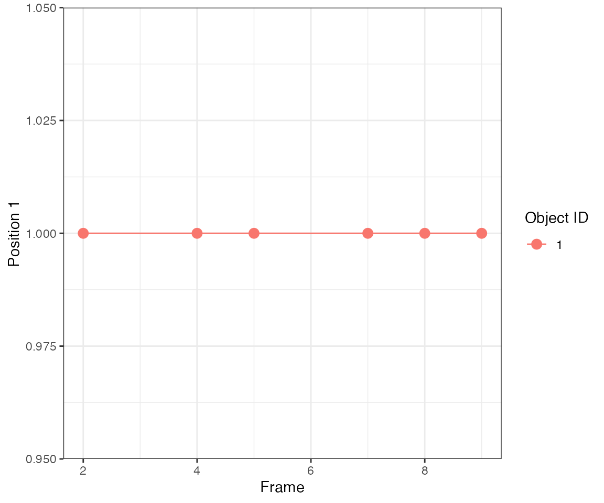
The parameter nPrev = 1L tells the tracking algorithm to link events only from consecutive frames, i.e. it looks back only 1 frame. Hence, clustering will yield 3 events at frames 2, [4,5], [7,8,9].
dcoll = ARCOS::trackColl(obj = dts[m>0],
eps = 1.0,
minClSz = 1L,
nPrev = 1L,
deb = F)
ARCOS::plotTracks(dcoll, size = 3)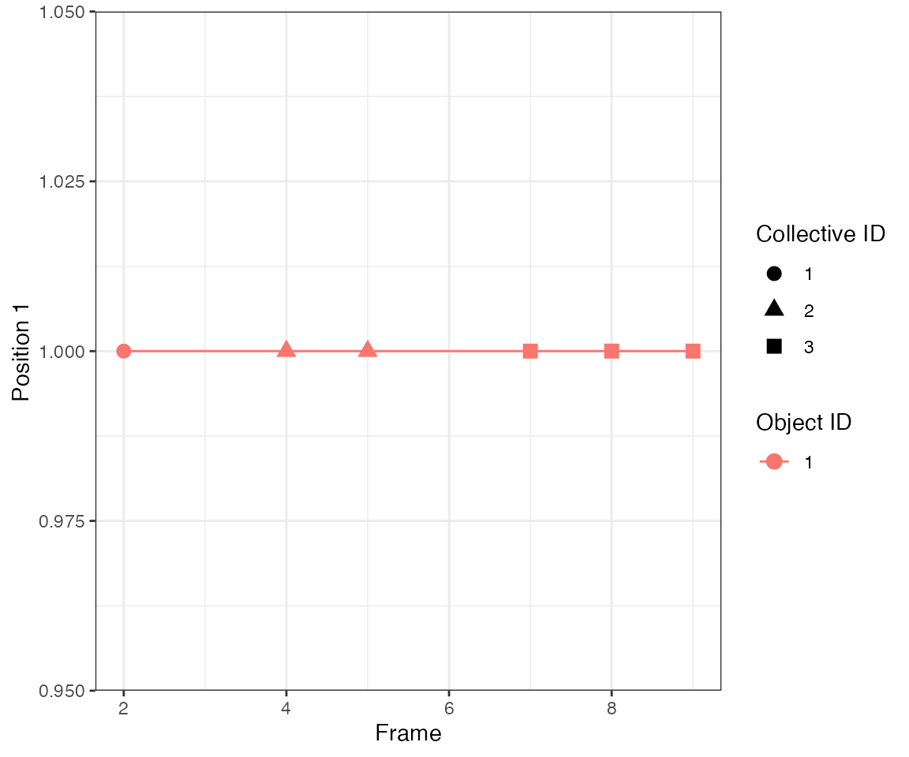
Test passed 🌈
Test 2 - 3 spreading
Consider 7 objects that become subsequently active every 2 frames. It mimics an activity wave spreading from object #4 to neighbouring objects.
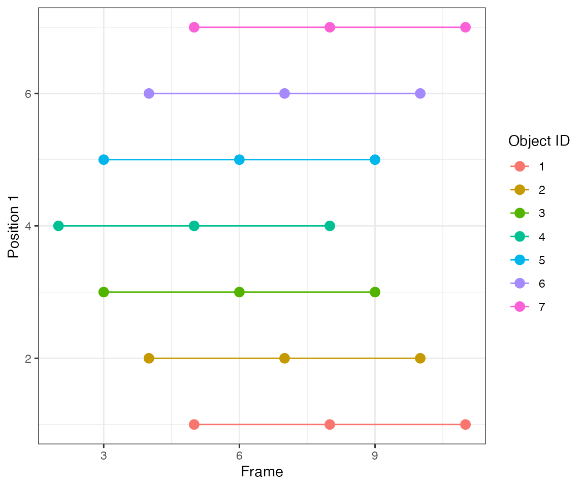
By linking events that are 1 frame apart (parameter nPrev = 1L), the tracking algorithm identifies 3 collective events.
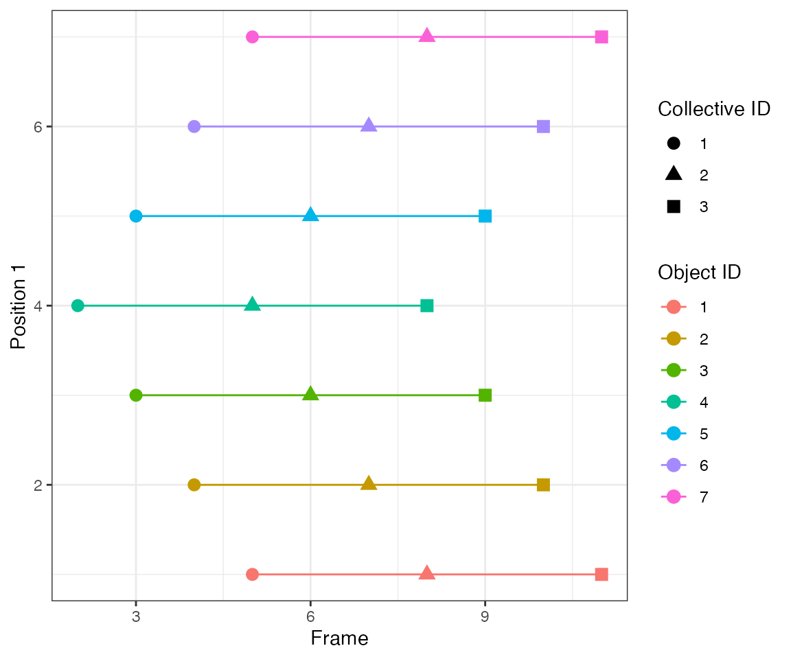
Test passed 🎊
Test 3 - 5 overlapping
Consider two objects 2 spatial units apart that beocme active at overlapping time points.
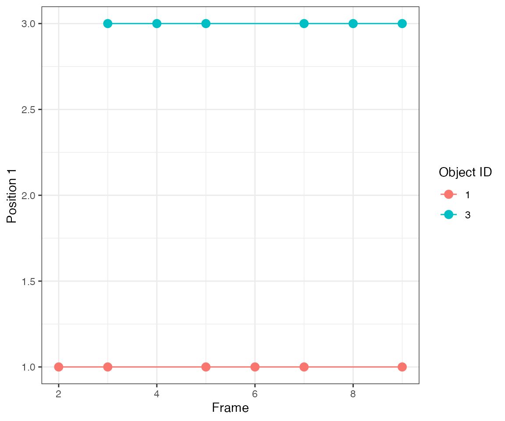
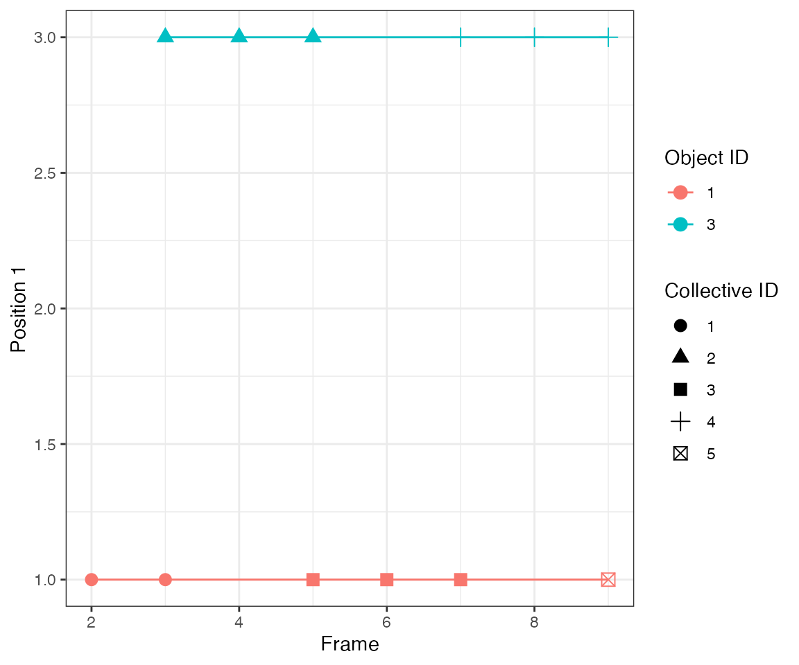
Test passed 😸
Test 7 - 2 with 1 common symmetric
This test addresses a problem of two different activation events (objects #1 and 2) that spread to a common, equidistant neighbour (object #3).
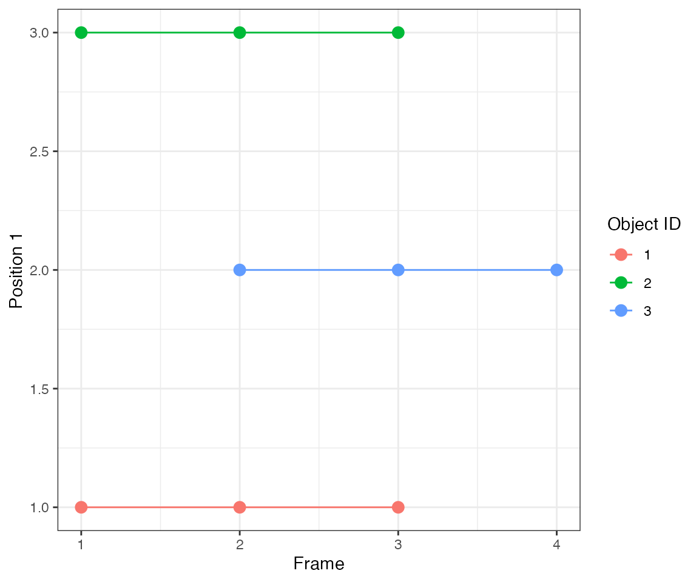
Since there’s no obvious way to treat this symmetric case, the algorithm assumes that the common neighbour becomes active due to one of the initiators. Here, the activation wave #2 from object #2 spreads to object #3, while the activation wave #1 from object #1 is confined only to that object.
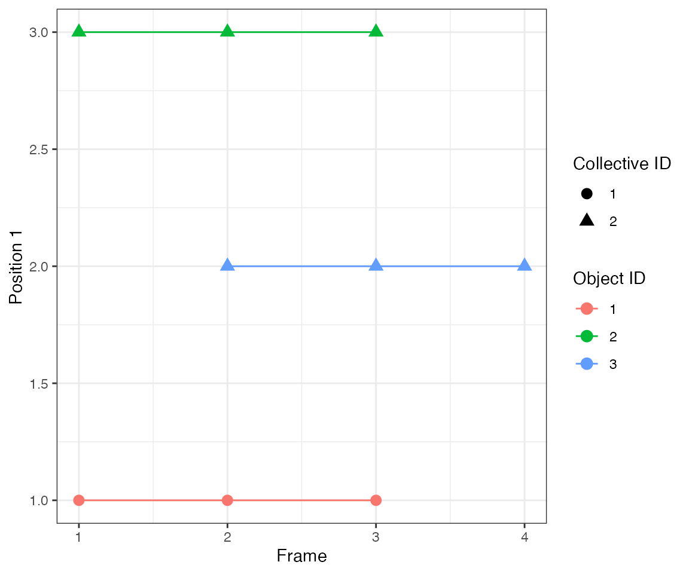
Test passed 🥳
Test 8 - 2 with 1 common asymmetric
A similar situation to the previous case but object #3 is no longer equidistant to objects #1 and 2. Instead, it is closer to object #1.
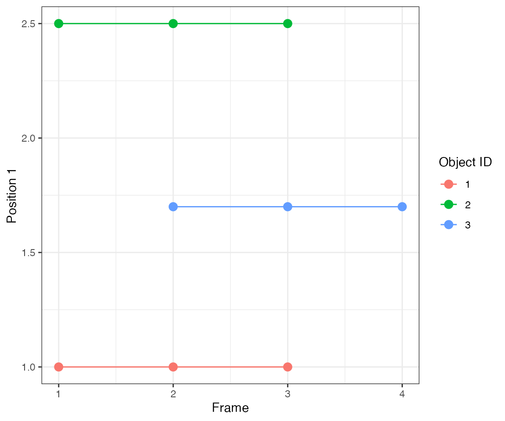 Since the neighbourhood cut-off is 1 distance unit (parameter eps), the collective activation #1 from object #1 spreads to object #3.
dcoll = ARCOS::trackColl(obj = dts[m>0],
eps = 1.0,
minClSz = 1L,
nPrev = 1L,
deb = F)
ARCOS::plotTracks(dcoll, size = 3)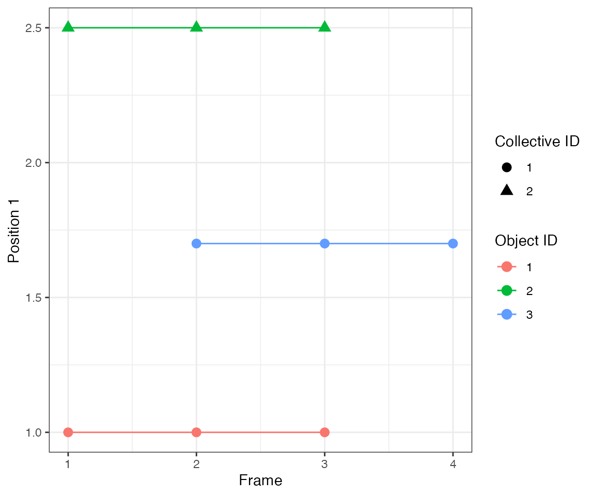
Test passed 😸

Link 2 frames
Spatial clusters are linked 2 frames back, thus a one-frame-gap is allowed in a collective event.
Test 1 - 1 central
Here parameter nPrev = 2L, which links events from two consecutive frames, i.e. it looks back 2 frames. Hence, clustering will yield 1 continuous events.
dcoll = ARCOS::trackColl(obj = dts[m>0],
eps = 1.0,
minClSz = 1L,
nPrev = 2L,
deb = F)
ARCOS::plotTracks(dcoll, size = 3)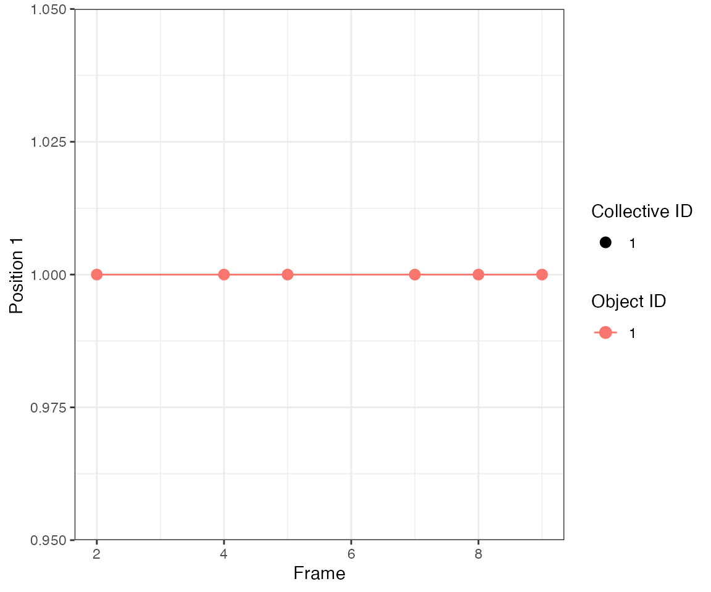
Test passed 😀